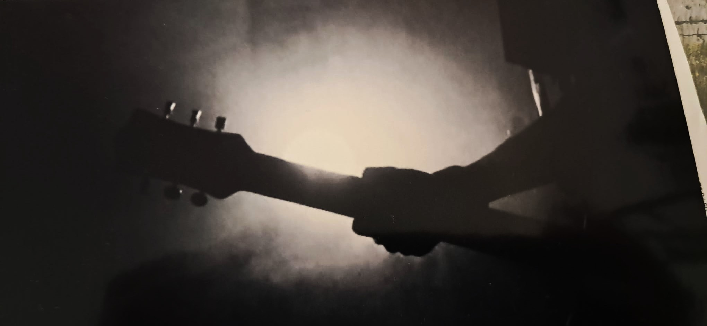

On ne fait pas beaucoup plus organique que le son d'une guitare. Son imperfection, ses vibratos, tout ça évoque facilement la voix humaine. Et à côté de ça, on trouve la mécanique impossible des D.A.W. La techno allemande, aux sonorités industrielles.
La nostalgie est un réflexe assez naturel, et chez les guitaristes, souvent elle prend forme avec des idées comme "tu vois, dans les années 70', ils faisaient tout en une seule take, bam ! C'est pour ça que c'est des chefs d'oeuvre !" ** il tire une latte sur sa roulée mal fagotée **
Non pas que je n'apprécie pas les années 70 et leurs sonorités, loin de là, mais il faut quand même admettre que à leur époque, ils étaient bien au summum de la modernité technologique. Ils ont été les premiers à torturer le son avec des amplis et des effets carrément novateurs. S'ils étaient de la partie aujourd'hui, c'est certain qu'ils seraient les premiers à s'amuser avec les logiciels actuels, ils ne seraient pas dans un garage à jouer une Les Paul dans un Fender twin à fond de Fuzz.
Guitare du XXIIème siècle
Trans-Humanisme Musical
Sonore - 10.7.2025

On ne fait pas beaucoup plus organique que le son d'une guitare. Son imperfection, ses vibratos, tout ça évoque facilement la voix humaine. Et à côté de ça, on trouve la mécanique impossible des D.A.W. La techno allemande, aux sonorités industrielles.
La nostalgie est un réflexe assez naturel, et chez les guitaristes, souvent elle prend forme avec des idées comme "tu vois, dans les années 70', ils faisaient tout en une seule take, bam ! C'est pour ça que c'est des chefs d'oeuvre !" ** il tire une latte sur sa roulée mal fagotée **
Non pas que je n'apprécie pas les années 70 et leurs sonorités, loin de là, mais il faut quand même admettre que à leur époque, ils étaient bien au summum de la modernité technologique. Ils ont été les premiers à torturer le son avec des amplis et des effets carrément novateurs. S'ils étaient de la partie aujourd'hui, c'est certain qu'ils seraient les premiers à s'amuser avec les logiciels actuels, ils ne seraient pas dans un garage à jouer une Les Paul dans un Fender twin à fond de Fuzz.
La nostalgie est un réflexe assez naturel, et chez les guitaristes, souvent elle prend forme avec des idées comme "tu vois, dans les années 70', ils faisaient tout en une seule take, bam ! C'est pour ça que c'est des chefs d'oeuvre !" ** il tire une latte sur sa roulée mal fagotée **
Non pas que je n'apprécie pas les années 70 et leurs sonorités, loin de là, mais il faut quand même admettre que à leur époque, ils étaient bien au summum de la modernité technologique. Ils ont été les premiers à torturer le son avec des amplis et des effets carrément novateurs. S'ils étaient de la partie aujourd'hui, c'est certain qu'ils seraient les premiers à s'amuser avec les logiciels actuels, ils ne seraient pas dans un garage à jouer une Les Paul dans un Fender twin à fond de Fuzz.
Dossier Technique
0002